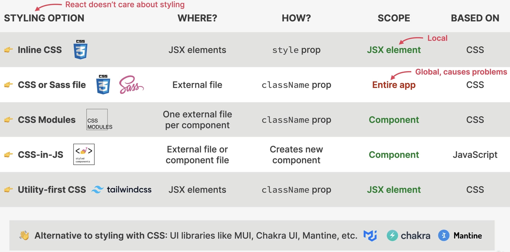

Styling Options for React Applications
Up until now, we used a single, global CSS file to style all components. In real world applications, this is almost never the case.
Though there are multiple options to style a React applications (React doesn’t care how you style).

Styling Options in React
external styling libraries without CSS are not ideal for beginners
the CSS-in-JS approach is ideal for including styling within the component definition itself
CSS modules allow for a dedicated CSS file per component
Using CSS modules
No additional installation needed.
Create a
<ComponentFileName>.module.cssfile next to the<ComponentFileName>.jsxfile and add some styling, for example:nav { background-color: red; } .nav ul { display: flex; justify-content: space-between; list-style: none; }
Hint
A CSS module file only allows classnames as root CSS element, no element types.
Inside
<ComponentFileName>.jsximport the style module as a name (usuallystyles). Note, as the styles are imported as an object, we must access the classes via dot operator inside JavaScript-Mode:import { NavLink } from "react-router-dom"; import styles from "./PageNav.module.css"; function PageNav() { return ( <nav className={styles.nav}> <ul> <li> <NavLink to="/">Home</NavLink> </li> <li> <NavLink to="/pricing">Pricing</NavLink> </li> <li> <NavLink to="/product">Product</NavLink> </li> </ul> </nav> ); }
Note
Classname of CSS classes are automatically attached with a random id (e.g.
_nav_3o9kt_5), which enables us to define a different style for a similar element in another CSS module, without those two styles colliding.For example, having two
<nav>elements on the same page, each with styles defined in their own CSS module file is working fine.Importing the component style as the
stylesobject instead of using the classname directly (e.g.nav) is necessary to utilize component CSS module’s styles, as only then the resulting classname can be matched with the actual computed name (e.g._nav_3o9kt_5).Important
When defining a global CSS file without classnames, it overwrites the styles of your CSS modules.
In order to define a global style within a CSS module file, we can use the
:global syntax like this (here .test)
:global(.test) {
background-color: red;
}
and then access the style from any important JSX file like this
function Homepage() {
return (
<div>
<PageNav />
<AppNav />
<h1 className="test">WorldWise</h1>
<Link to="/app">Go to app</Link>
</div>
);
}
The reason this works is that the class name does not receive the random id, hence can be accessed by its name from anywhere.
Important
Defining global styles within a CSS module is usually not a good idea and should not happen, as the style should be limited to the respective component.
This helps us in defining a style for the className="active" Nav-Element, which
it receives when it is selected.
This won’t work
.nav .active {
background-color: green;
}
as the resulting classname would be something like _active_abcdef_1, not simply
active. To prevent that, we again use the :global syntax (for active only):
.nav :global(.active) {
background-color: green;
}
Hint
Global styles should only be defined inside a component’s CSS class file, if the classname is provided by an external source, like for the active navigation element.